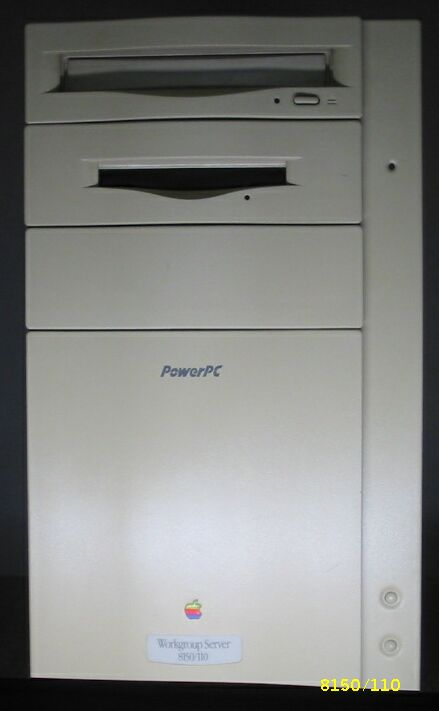
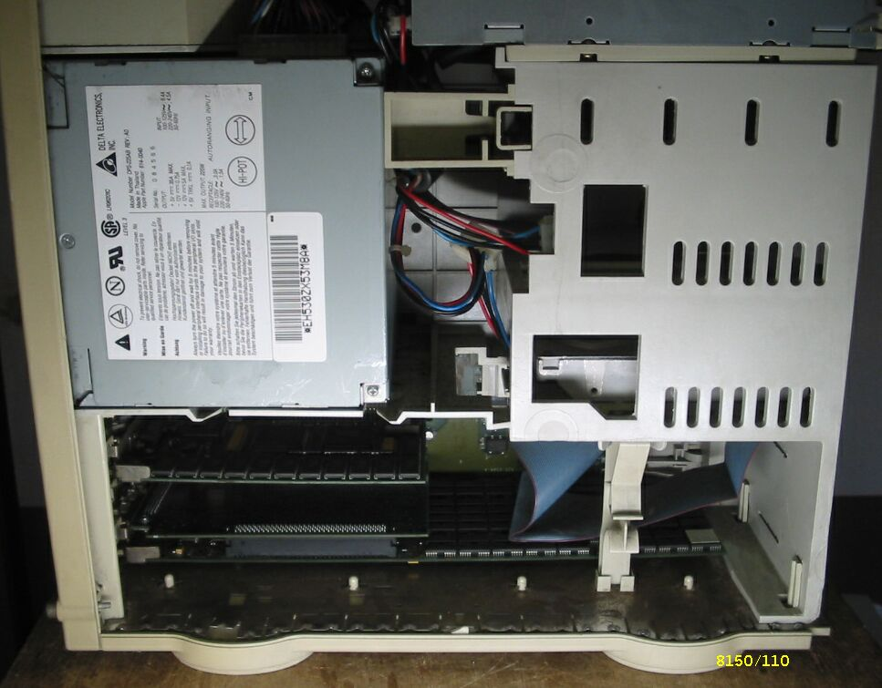
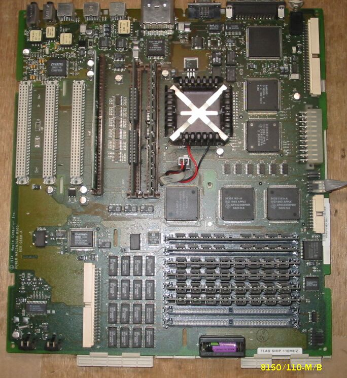
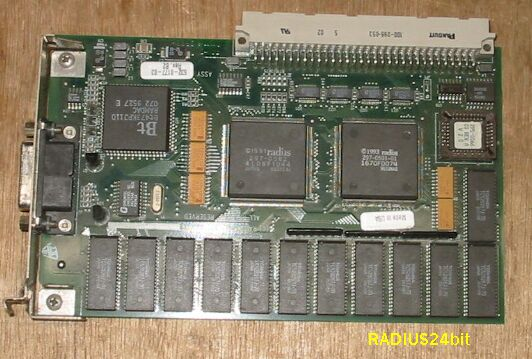
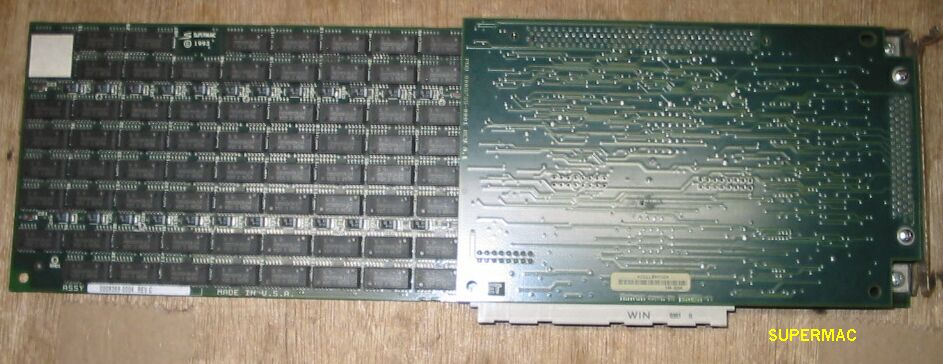
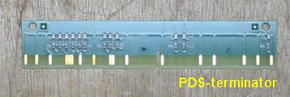

Workgroupserver8150/110について
Workgroupserver8150/110の正面

Workgroupserver8150/110の内側

Workgroupserver8150/110のマザーボード

外すのが大変なマザーボード、白い字で FLAG SHIP 110MHz と書いてあります。
Workgroupserver8150/110に使われているRADIUS,SuperMacのボード

24bitとの表示があります。

FONTサーバーのようです。

PDSスロットに挿してあるターミネータ、珍しいので掲載しておきます。
（2003/06/19 記）
PPCマッキントッシュのページに戻る